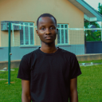

Chineme Ndu-Okoronkwo | WDD 130

I am constantly looking for opportunities to improve my skills and expand my knowledge in software development. I enjoy learning new technologies, especially in front-end and back-end development, and I like turning ideas into functional, user-friendly applications. I am particularly interested in creating solutions that solve real-world problems and make everyday tasks easier. In addition to programming, I value collaboration and enjoy working with others on projects where we can share ideas and grow together. I am also committed to continuous learning, whether through online courses, personal projects, or contributing to open-source communities. My goal is to become a well-rounded developer and build impactful digital experiences that can reach people globally.